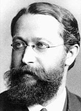

Early History of Semiconductors
The history of the understanding of semiconductors begins with experiments on the electrical properties of materials. The properties of the time-temperature coefficient of resistance, rectification, and light-sensitivity were observed starting in the early 19th century. Karl Ferdinand Braun developed the crystal detector, the first semiconductor device, in 1874. Thomas Johann Seebeck was the first to notice an effect due to semiconductors, in 1821.[27] In 1833, Michael Faraday reported that the resistance of specimens of silver sulfide decreases when they are heated. This is contrary to the behavior of metallic substances such as copper. In 1839, Alexandre Edmond Becquerel reported observation of a voltage between a solid and a liquid electrolyte, when struck by light, the photovoltaic effect. In 1873, Willoughby Smith observed that selenium resistors exhibit decreasing resistance when light falls on them. In 1874, Karl Ferdinand Braun observed conduction and rectification in metallic sulfides, although this effect had been discovered much earlier by Peter Munck af Rosenschold (sv) writing for the Annalen der Physik und Chemie in 1835,[28] and Arthur Schuster found that a copper oxide layer on wires has rectification properties that ceases, when the wires are cleaned. William Grylls Adams and Richard Evans Day observed the photovoltaic effect in selenium in 1876.[29] A unified explanation of these phenomena required a theory of solid-state physics, which developed greatly in the first half of the 20th century. In 1878 Edwin Herbert Hall demonstrated the deflection of flowing charge carriers by an applied magnetic field, the Hall effect. The discovery of the electron by J.J. Thomson in 1897 prompted theories of electron-based conduction in solids. Karl Baedeker, by observing a Hall effect with the reverse sign to that in metals, theorized that copper iodide had positive charge carriers. Johan Koenigsberger classified solid materials like metals, insulators, and "variable conductors" in 1914 although his student Josef Weiss already introduced the term Halbleiter (a semiconductor in modern meaning) in his Ph.D. thesis in 1910.[30][31] Felix Bloch published a theory of the movement of electrons through atomic lattices in 1928. In 1930, B. Gudden stated that conductivity in semiconductors was due to minor concentrations of impurities. By 1931, the band theory of conduction had been established by Alan Herries Wilson and the concept of band gaps had been developed. Walter H. Schottky and Nevill Francis Mott developed models of the potential barrier and of the characteristics of a metal–semiconductor junction. By 1938, Boris Davydov had developed a theory of the copper-oxide rectifier, identifying the effect of the p–n junction and the importance of minority carriers and surface states.[28] Agreement between theoretical predictions (based on developing quantum mechanics) and experimental results was sometimes poor. This was later explained by John Bardeen as due to the extreme "structure sensitive" behavior of semiconductors, whose properties change dramatically based on tiny amounts of impurities.[28] Commercially pure materials of the 1920s containing varying proportions of trace contaminants produced differing experimental results. This spurred the development of improved material refining techniques, culminating in modern semiconductor refineries producing materials with parts-per-trillion purity. Devices using semiconductors were at first constructed based on empirical knowledge before semiconductor theory provided a guide to the construction of more capable and reliable devices. Alexander Graham Bell used the light-sensitive property of selenium to transmit sound over a beam of light in 1880. A working solar cell, of low efficiency, was constructed by Charles Fritts in 1883, using a metal plate coated with selenium and a thin layer of gold; the device became commercially useful in photographic light meters in the 1930s.[28] Point-contact microwave detector rectifiers made of lead sulfide were used by Jagadish Chandra Bose in 1904; the cat's-whisker detector using natural galena or other materials became a common device in the development of radio. However, it was somewhat unpredictable in operation and required manual adjustment for best performance. In 1906, H.J. Round observed light emission when electric current passed through silicon carbide crystals, the principle behind the light-emitting diode. Oleg Losev observed similar light emission in 1922, but at the time the effect had no practical use. Power rectifiers, using copper oxide and selenium, were developed in the 1920s and became commercially important as an alternative to vacuum tube rectifiers.[29][28] The first semiconductor devices used galena, including German physicist Ferdinand Braun's crystal detector in 1874 and Bengali physicist Jagadish Chandra Bose's radio crystal detector in 1901.[32][33] In the years preceding World War II, infrared detection and communications devices prompted research into lead-sulfide and lead-selenide materials. These devices were used for detecting ships and aircraft, for infrared rangefinders, and for voice communication systems. The point-contact crystal detector became vital for microwave radio systems since available vacuum tube devices could not serve as detectors above about 4000 MHz; advanced radar systems relied on the fast response of crystal detectors. Considerable research and development of silicon materials occurred during the war to develop detectors of consistent quality.[28]
Early Transistors